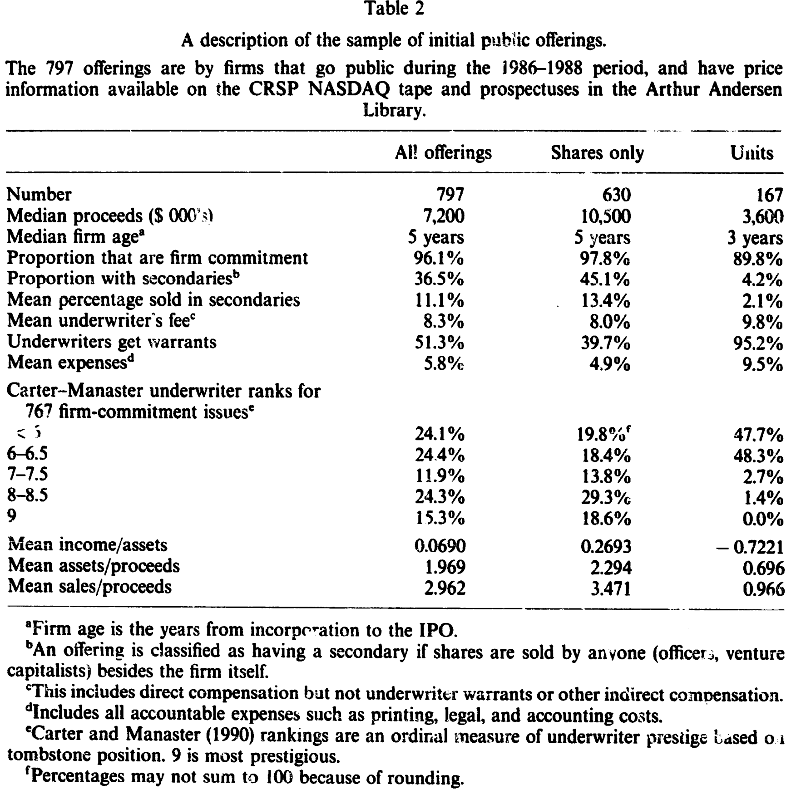
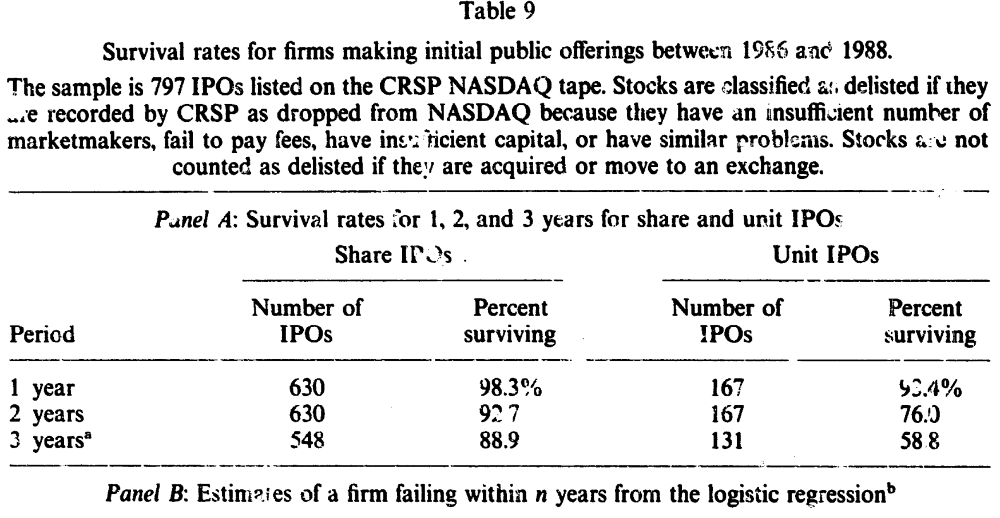
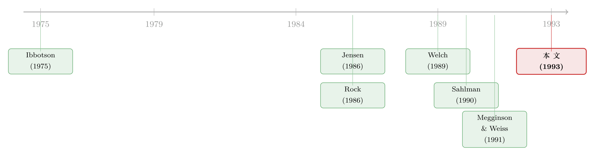

一次只给一半：新股里的认股权证，是「甜头」还是镣铐？
本文读的是 Schultz (1993, Journal of Financial Economics)：那些在 IPO 里把「股票＋认股权证」打包成「单位（unit）」卖出去的公司，并不是在用权证当『甜头』哄人接盘，而是在做一件和风险投资如出一辙的事——分阶段融资。先给一笔刚够「探路」的钱，等公司用业绩证明了项目值钱，权证才被行权，第二笔钱才进来。一句话：单位发行，是股东替自己装上的一道「证明给我看，再给你钱」的锁。
1 一个被叫作「甜头」的东西
先讲一个 1986 年 9 月的真实例子。一家叫 CMS Advertising 的公司去上市，发行价 7 美元一「单位」。买一个单位，你拿到的不是一股股票，而是两股股票加一份认股权证（warrant）；这份权证允许你在两年内、以 3.75 美元的行权价再买一股。更妙的是，只要股价连续 60 个交易日站上 5 美元，公司就可以「召回（call）」这些权证，逼你赶紧行权。
这种打包发行，在华尔街有一个流传已久的解释：权证是「甜头（sweetener）」。意思是说，这只新股本身没什么人要，发行人只好额外塞一份权证当赠品，把投资者哄进来。听上去很顺，对吧？小公司、烂生意、没人买，于是加点料。
但这篇论文的作者偏偏不信这个故事。他翻了 1986–1988 年的 797 宗 IPO——其中 630 宗是普通的股票发行，167 宗是单位发行——然后问了一个更尖锐的问题：如果权证只是个赠品，为什么偏偏是这一类公司去发它？ 而且发了之后，它们的命运为什么如此不同？
于是一个完全不同的解释浮出水面：发单位，不是为了哄人接盘，而是为了把融资分成两次给。
2 为什么要「分两次给」：自由现金流的幽灵
要理解这一步，得先把 Jensen (1986) 那个老幽灵请出来：自由现金流的代理成本（agency cost of free cash flow）。（关于这一点，可参见《现金为什么一定要「还」出去？——四十年后，重读 Jensen 的自由现金流》。）
设想一家「开发阶段」的公司：手里有个项目，还没做完研发、没做完试销。它去 IPO，募一笔钱。如果研发成功、试销有戏，钱拿去投产，皆大欢喜。可万一研发失败、投产根本不划算呢？这时账上剩下的钱，就成了一笔自由现金流——而对一个刚上市、屁股还没坐热的管理层来说，把这笔钱投进一个负净现值（negative NPV）的项目，往往不是为了「把公司做大」，而是为了保住自己的饭碗。项目一旦彻底停摆，他们就失业了；只要还在烧钱、还在「推进」，位子就还在。
风险投资家是怎么治这个病的？Sahlman (1990) 说得很直白：靠分阶段注资（staged financing）。VC 从不一次把钱给够，而是「先给一笔、看一眼、再给一笔」。因为——用他的话说——「只要还有人肯继续掏钱，创业者几乎永远不会主动叫停一个正在失败的项目」。
那么问题来了：一家要上市的小公司，没有 VC 在背后一笔一笔地喂钱，它怎么给自己装上同样的约束？
答案就是单位发行。 卖出一个「股票＋权证」的单位，等于公司向市场预先承诺：将来还要在权证的行权价上再卖一笔股票——这笔钱要等权证被行权（或被召回逼着行权）时才到账。这跟「IPO 之后再做一次增发」有什么区别？区别恰恰是最关键的一步：增发的价格是到时候临场定的，而权证的行权价是事先定死、而且定在当前股价之上的。
这一个小小的设计，把激励彻底掰了过来。
3 模型：管理层为什么宁愿做亏本买卖
论文用一个数字例子（论文表 1）把这套逻辑摆得清清楚楚。我们一步步走一遍——它虽然只是算术，却是全文的「定理」。
设定是这样的：一个项目，有 20% 的概率最终值 10.5 百万美元，80% 的概率只值 0.1 百万美元。要把它做成，需要先花 1 百万做研发（R&D），再花 2 百万建生产设施。其中研发能确定无疑地揭示项目的好坏，而建厂房不提供任何信息。利率假设为零。关键的一个细节：公司可以在做研发之前，先把最多 1 百万的厂房钱花掉。
情形 A：先做研发。 研发花掉 1 百万后，项目类型水落石出。若是好项目（值 10.5），再花 2 百万投产，净赚 $10.5-2-1=7.5$ 百万；若是坏项目，直接停手，只亏掉那 1 百万研发费。于是上市时点的净现值是
$$ NPV_A = 0.2 \times 7.5 + 0.8 \times (-1) = 0.7 \;(\text{million}) $$
投产的概率是 0.2——只有项目真的好，才会投产。
情形 B：先建厂房。 如果管理层反其道而行，先把钱砸进生产设施，那么到了决策时点，项目好坏还没被揭示，市场只知道期望值 \(0.2\times 10.5 + 0.8 \times 0.1 = 2.18\) 百万。此时再补齐剩下的钱完成投产。问题是：厂房成了沉没成本，于是无论好坏，生产都会被推到底。坏项目下，全部成本 $2+1=3$ 百万砸下去只换回 0.1，亏 2.9 百万。净现值变成
$$ NPV_B = 0.2 \times 7.5 + 0.8 \times (-2.9) = -0.82 \;(\text{million}) $$
投产概率是 1.0。
请盯住这两个数字：A 是 +0.7，B 是 -0.82。一个赚、一个亏。可论文的判断是——管理层会选 B。为什么？因为先把厂房钱变成沉没成本，就等于给自己上了双保险：哪怕项目后来被证明一文不值，生产也照样推进，他们的工作也照样保住。这正是自由现金流代理成本最阴险的地方：管理层愿意为了保住饭碗，主动去做一桩注定亏钱的买卖。
于是反转出现了：认股权证恰恰堵死了 B 这条路。 假设权证允许在时点 2 用 2 百万买下 2 百万股（约占公司 2/3，即 0.667）。权证会不会被行权，取决于「行权后能拿到的股票价值」是否超过行权价：
- 情形 A、好项目：\(0.667 \times 10.5 = 7\) 百万 $> 2$ 百万 → 行权，公司顺势拿到投产所需的 2 百万；
- 情形 A、坏项目：\(0.667 \times 0.1 < 2\) 百万 → 不行权；
- 情形 B：市场只知期望值 2.18，权证作为股票的价值 \(0.667 \times 2.18 = 1.45\) 百万 $< 2$ 百万 → 不行权。
看出门道了吗？只有当 IPO 募来的钱先被用去探明项目的真实价值（即走 A 路线），第二轮融资才可能通过行权实现。如果管理层偷懒去走 B、去沉没成本，权证就永远不会被行权，第二笔钱也就永远不来。
这就是那个最该被讲透的核心：权证的行权价定在高处，把「证明价值」变成了拿到第二笔钱的前提条件。
那管理层能不能绕过去——不靠行权，直接再做一次低价增发把钱圈来？论文给出了第二道锁：很多权证协议带有反稀释条款。论文里举了样本公司 Alfa International 的例子：一旦公司以低于行权价的价格增发股票，权证的行权价会被下调、可购股数会被上调。附录算过一笔账：若公司想向新股东卖出 2 百万的股权，权证持有人将仍保有以 2 百万买下公司 40% 的权利——这意味着新股东最多只能买到 60%，于是在项目价值未明时，没人肯掏 2 百万。这道条款，等于把「低价偷偷增发」这条后门也焊死了。
到此，整个机制闭合了：发单位 → 预设一个高于现价的第二轮价格 → 逼管理层先用 IPO 的钱去证明项目 → 证明了，权证行权，第二笔钱进来投产；没证明，公司就拿不到第二笔钱，自然也烧不起负 NPV 的项目。这就是「分阶段融资」四个字的全部含义。
4 四个可被证伪的预言
一个好的代理成本故事，必须能掏出几个能被数据打脸的预言。论文给了四个：
- 存活率更低。 因为单位发行的钱本就是拿去「探路」的，很多公司探完会发现根本没有正 NPV 的投资——于是它们更可能消失。
- 若成功，更可能再融资。 探明值钱了，权证才被行权，第二轮股权才到位。
- 越「看不清」的公司越爱发单位。 经营历史短、技术复杂、几乎没有销售/盈利/资产的公司，价值最难评估，最需要这道锁。
- 管理层持股越少，越爱发单位。 持股越少，做烂投资时自己承担的成本越少，代理问题越严重。
剩下的活，就是去数据里逐条对账。
5 数据与识别
数据从 CRSP 的 NASDAQ 磁带里捞出 1986–1988 年首次上市的股票，剔除掉曾在境外交易所交易过的、反向杠杆收购的、以及银行与储贷机构，再去芝加哥的 Arthur Andersen Library 一份份翻招股书，最终得到 797 宗有招股书的 IPO（630 股票、167 单位）。风险投资参与情况取自 The Venture Capital Digest，发行时点的财务特征取自 Going Public: The IPO Reporter。
观测单位是单宗发行。这里没有外生冲击、没有断点，识别靠的是横截面对比 + 多元 logit：把「发不发单位」当成被解释变量，看它和公司规模、资产、盈利、年龄、承销商声望、持股结构等怎么挂钩；再把「上市后会不会退市」当成被解释变量，看单位发行这个虚拟变量是否还显著。这是一篇 1993 年的实证论文该有的样子——朴素，但每一步都对得上前面那套理论。
6 结果：每一条预言都站住了
先看表 2 的单变量对比，差异几乎是一边倒的。单位发行公司的募资中位数只有约 3.0 百万，而股票发行是 10.5 百万——三倍之差；公司年龄中位数 3 年 对 5 年；更刺眼的是三个比率：单位发行公司的收入/资产均值为 -0.7221（股票发行是正的 0.2693），资产/募资 0.696 对 2.294，销售/募资 0.966 对 3.471。换句话说，发单位的公司更小、更年轻、几乎没有家底、还在亏钱——正是「价值最难评估」的那一类。

Table 2
承销商这一栏也耐人寻味：在 Carter–Manaster (1990) 的声望排名里，单位发行里没有一家用上排名 9（最高）的承销商（股票发行是 18.6%），却扎堆在最低的几档（排名 6 及以下占到 47.7%、48.3%）。而且单位发行的承销商有 95.2% 拿到了权证作报酬（股票发行只有 39.7%），直接费用 9.8% 对 8.0%、其他费用 9.5% 对 4.9%——单位发行对发行人来说，确实更贵。
接着是 logit。把「是否发单位」对一组变量回归，结论很干净：发单位的概率随募资规模下降（系数约 -0.0025，标准误 0.0004，1% 显著）；随资产/募资比下降（1% 显著）；随已售股权比例上升（系数约 +0.025，1% 显著）。收入/募资比的系数为负、符号正确，只是显著性偏弱。其余变量（上市后方差、低声望承销商虚拟、年龄、销售/资产）符号都对，但没到 5%。一句话：越小、家底越薄、管理层卖出去的股权越多的公司，越会去发单位——四个预言里的第三、第四条，照单全收。
最后是全文的「重锤」——存活率。论文翻 CRSP 看退市记录，把因「做市商不足、欠费、资本不足」之类被踢出 NASDAQ 的算作「失败」，把并入或升板到纽交所/美交所的算作「存活」。结果如表 9：三年之后，股票发行公司有 88.9% 还在，单位发行公司只剩 58.8%。在三年内失败的单位发行公司里，退市原因包括做市商不足（33.5%）、资本不足（29.6%）、欠费或逾期申报（13.0%）、流通量或资产不足（11.1%）。

Table 9
把退市概率放进一个 logit 模型，就是论文的第 (3) 式。我把它和它最该被讲清的几个部件一起摆出来：
其中 \(\text{Size}_i\) 是发行价乘以发售证券数，\(\text{Age}_i\) 是自注册到上市的年数。规模与年龄进来，是为了刻画对公司价值的事前不确定性，二者都应与退市概率反向；高声望承销商的「认证」应当意味着更低的退市概率。
7 顺带说一句「打折」
代理成本故事还附带一个关于抑价（underpricing）的预言：既然单位发行的公司价值更难评估，按照 Rock (1986)、Beatty and Ritter (1986) 那套「不确定性越高、抑价越深」的逻辑，单位 IPO 理应被打折得更狠。数据印证了这一点——在控制了影响初始回报的其他因素之后，单位 IPO 比股票 IPO 多抑价约 8%。（关于 IPO 到底是不是被打折卖的，可参见《新股到底是「打折」卖，还是「溢价」卖？》。）
至于费用，表 4 显示按发行规模调整后，单位与股票发行的承销直接费率其实差不多（Mann–Whitney 检验测不出显著差异）；真正的差距藏在权证、非问责费用等非直接报酬里——这也和「单位发行风险更大、承销更费劲」的直觉一致。
8 文献脉络
这篇论文坐在两条河流的交汇处。
一条是抑价这条老河。Ibbotson (1975) 最早记录了 IPO 平均被抑价的事实，Ritter (1984)、Ibbotson, Sindelar and Ritter (1988) 把它做实；随后 Rock (1986) 用「知情投资者—赢家诅咒」给出解释，Beatty and Ritter (1986) 证明了不确定性与抑价之间的单调关系，Allen and Faulhaber (1989)、Grinblatt and Hwang (1989)、Welch (1989) 则发展出「用抑价发信号、到增发时再赚回来」的信号模型。本文借这条河解释了「为什么单位发行抑价更深」。
另一条是代理与分阶段融资这条河。Jensen (1986) 立起了自由现金流代理成本的大旗；Sahlman (1990)、Barry, Muscarella, Peavy and Vetsuypens (1990)、Megginson and Weiss (1991) 把风险投资如何用分阶段注资、认证来治理这个问题讲透。本文真正的贡献，是把这两条河接到了一起：它指出公开市场上的单位发行，本质上是 VC 式分阶段融资的一个「自助版本」——没有 VC，公司也能靠一纸权证条款，给自己装上同样的「证明给我看，再给你钱」的约束。这是一个相当漂亮的概念迁移。

9 评论与延伸（Q&A + 研究方向）
(a) 几个可能的疑问
Q：「分阶段融资」和市场上的「甜头说」，到底差在哪？
差在因果方向。「甜头说」认为是先有了卖不动的烂股票，才被迫塞权证；分阶段融资说则认为，是公司主动选择用权证给自己设一道约束。两者对数据的预言不同：甜头说很难解释「为什么发单位的公司系统性地更小、更没家底、且管理层卖出更多股权」，更难解释那道把低价增发焊死的反稀释条款——那分明是设计出来的锁，不是临时的赠品。
Q：单位发行公司存活率低，会不会只是「它们本来就更烂」，跟权证毫无关系？
这是最该警惕的内生性。论文的回应是把规模、年龄、承销商声望、初始回报都放进 logit 里控制，单位虚拟变量仍显著。但说到底这是横截面相关，不是因果——它能说「发单位的公司更易失败」与理论一致，却无法排除「发单位」只是「难评估、高风险」的一个标签。真正干净的识别，本文并没有给出。
Q：既然行权价定在高处，万一股价就是上不去，第二笔钱不就永远没了吗？
正是如此，而这恰恰是机制的「功能」而非「缺陷」。股价上不去，说明项目没被证明值钱，那么按理就不该再给第二笔钱——把它停在这里，正是分阶段融资要的结果。代价是好公司偶尔会因为市场暂时低迷而拿不到本该拿的钱，这是这道锁的副作用。
Q：为什么不直接「IPO + 将来增发」，非要用权证？
因为增发的价格是临场定的，管理层有动机把价格压低、把股权一次性卖光来圈钱保命。权证把第二轮价格事先锁死在现价之上，再配上反稀释条款，等于剥夺了管理层「随时低价再融资」的自由度。这一条，是单位发行相对于普通增发的独门优势。
Q：那为什么不是所有小公司都发单位？
因为这道锁是有成本的：抑价更深（约 8%）、承销费更贵、还要把权证白送给承销商。只有当自由现金流代理成本足够严重（价值极难评估、管理层持股极少）时，装这道锁才划算。论文的横截面分布——单位发行扎堆在最小、最难评估的那一端——正好印证了这种「成本—收益」权衡。
Q：33% 的单位发行公司因「做市商不足」退市，这能算「项目失败」吗？
论文专门为此辩护：在这里「失败」不止意味着股价跌，更意味着公司无法说服投资者「我的项目够好、值得继续融资」——做市商撤离、float 枯竭，本身就是市场对其前景投下的否决票。这个界定有一定道理，但也偏宽，把一部分纯流动性问题混了进来。
(b) 几个可能的研究问题与提案
1. 把「单位发行」搬到公司债/可转债市场。 【经济故事】债券里的「认股权证附债（bond-with-warrants）」、可转债，本质上也是「先借一笔、达到某个价格再转股注入第二笔股权」的分阶段结构。本文的代理逻辑能不能解释哪些公司选择附权证发债？ 【可行性】中。需要 Mergent FISD / TRACE 里的债券发行特征 + 公司基本面，识别上同样面临横截面内生性，但样本远大于 1993 年的 167 宗，可做更细的异质性。
2. 用现代 IPO 数据重做存活率，并引入更干净的识别。 【经济故事】1986–1988 是 NASDAQ 单位发行的高峰。今天有了 SPAC、双层股权、warrant-laden 的 SPAC 单位（unit = 1 股 + 若干 warrant），机制几乎是本文的「转世」。SPAC 的清算/赎回结构提供了比当年更接近实验的设定。 【可行性】高。SPAC 数据公开、warrant 条款标准化，赎回门槛可当作准断点；可直接检验「权证比例 → 后续是否完成并购/存活」。
3. 外资持有人会不会改变这道锁的有效性？ 【经济故事】如果第二轮融资的潜在买家是「赖着不走」的长期外资机构，权证的约束力可能被强化或削弱（参见《外资真是「蝗虫」吗？》关于长期外资的讨论）。 【可行性】中。需要把发行时的持股结构与后续权证行权/再融资匹配，数据可得性是主要瓶颈。
4. 反稀释条款的「松紧」是否真的影响投资行为？ 【经济故事】本文把反稀释条款当成定性的锁，但条款的具体力度（如 Alfa International 式的全棘轮 vs 加权平均）差异巨大。条款越严，管理层「探路—证明」的激励应越强。 【可行性】中偏低。需要逐份手工读招股书编码条款强度，工作量大，但能把「锁的松紧 → 后续投资/存活」做成一个干净的剂量—反应关系。
10 我的判断
贡献。 这篇论文最漂亮的地方，是一次概念上的「认祖归宗」：它把一个被业界当成营销噱头的东西（权证作甜头），重新解释成一套有微观基础的治理机制（分阶段融资），并且这套解释能一口气导出四个方向一致、且被数据支持的预言。那个 Table 1 的数字例子尤其值得反复读——它用最朴素的算术，把「管理层为什么宁愿做亏本买卖」和「权证如何把激励掰回来」讲得无可辩驳。这是好的理论该有的样子：简单、闭合、可证伪。
对识别的担忧。 也要诚实：全文是横截面相关，不是因果。「发单位的公司更易失败」与「发单位是为了治理代理成本」一致，但同样与「发单位只是高风险公司的标签」一致——本文无法把这两者分开。logit 里的控制变量再多，也挡不住「难评估」这个共同的潜在因子同时驱动了「发单位」和「易失败」。此外，把「做市商不足」一律算作项目失败，口径偏宽。
后续想看到什么。 我最想看的，是一个能提供外生变异的设定——SPAC 的赎回门槛、或某次改变权证税务/会计处理的规则变动，能让我们真正分离出「权证这道锁」的因果效应，而不只是它的横截面投影。三十多年过去，单位发行以 SPAC 单位的形式卷土重来，这篇 1993 年的论文，恰恰给了今天的研究者一张现成的理论地图。
参考文献
- Allen, F., & Faulhaber, G. R. (1989). Signalling by underpricing in the IPO market. Journal of Financial Economics 23(2), 303–323.
- Barry, C. B., Muscarella, C. J., Peavy, J. W., & Vetsuypens, M. R. (1990). The role of venture capital in the creation of public companies. Journal of Financial Economics 27(2), 447–471.
- Beatty, R. P., & Ritter, J. R. (1986). Investment banking, reputation, and the underpricing of initial public offerings. Journal of Financial Economics 15(1–2), 213–232.
- Carter, R., & Manaster, S. (1990). Initial public offerings and underwriter reputation. Journal of Finance 45(4), 1045–1067.
- Grinblatt, M., & Hwang, C. Y. (1989). Signalling and the pricing of new issues. Journal of Finance 44(2), 393–420.
- Ibbotson, R. G. (1975). Price performance of common stock new issues. Journal of Financial Economics 2(3), 235–272.
- Ibbotson, R. G., Sindelar, J. L., & Ritter, J. R. (1988). Initial public offerings. Journal of Applied Corporate Finance 1(2), 37–45.
- James, C., & Wier, P. (1990). Borrowing relationships, intermediation, and the cost of issuing public securities. Journal of Financial Economics 28(1–2), 149–171.
- Jensen, M. C. (1986). Agency costs of free cash flow, corporate finance, and takeovers. American Economic Review 76(2), 323–329.
- Megginson, W. L., & Weiss, K. A. (1991). Venture capitalist certification in initial public offerings. Journal of Finance 46(3), 879–903.
- Ritter, J. R. (1984). The "hot issue" market of 1980. Journal of Business 57(2), 215–240.
- Rock, K. (1986). Why new issues are underpriced. Journal of Financial Economics 15(1–2), 187–212.
- Sahlman, W. A. (1990). The structure and governance of venture-capital organizations. Journal of Financial Economics 27(2), 473–521.
- Schultz, P. (1992). Unit IPOs: A form of staged financing. (Working paper; see also Schultz, P. (1993). Journal of Financial Economics 34(2), 199–229.)
- Smith, C. W. (1986). Investment banking and the capital acquisition process. Journal of Financial Economics 15(1–2), 3–29.
- Welch, I. (1989). Seasoned offerings, imitation costs, and the underpricing of initial public offerings. Journal of Finance 44(2), 421–449.